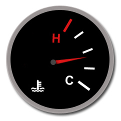

📲 Scope Creep and Personal Projects
Some viewers (especially programmers) may find the following image disturbing:
Charitably, software gore
Ouch. Is that Python or Javascript? And do I spy inline CSS styling? To quote The Talking Heads, “How did I get here?" After all, no one ever sets out to write bad code. While bad code can result from laziness or inexperience, I want to spend this article discussing a third source: Scope Creep.
Scope Creep is what results from changing a project’s goals while still in active development. Normally, this looks like adding new features without fully understanding how difficult implementation will be. More often than not, the project’s existing codebase has to be hacked into supporting these features, resulting in clunky and non-optimized code. My most recent project, CafeMatrix, is definitely guilty of this! So I thought it’d be cool to write an article deconstructing CafeMatrix’s code quirks and mapping them to scope creep I encountered during development. This post will be a bit programming-heavy, but I’ll try to throw some lifelines to non-technical audience members along the way. Let’s get started!
Scope Creep, Instance 1: CafeMatrix’s original inspiration
The ShopReview class, which handles review processing.
CafeMatrix was originally inspired by the “coffee spreadsheet”. Many of my friends track details on their favorite cafes in a spreadsheet. After parsing a few, I noticed each of these (independently developed) spreadsheets were ranking cafes on the same general set of criteria. Coffee taste and cost were obvious, but more abstract fields like “cafe vibe” and “good study spot” were well represented too.
This got me thinking - if there were an agreed-upon set of criteria to rated cafes, it would be much easier to share and compare recommendations with friends! But how to compare cafes? After all, some are great for hanging out, others are geared towards studying, and so on. My solution was the 3-axis system, where every cafe is rated on three separate axes: Study Suitability, Ambiance, and Value (which includes taste). This spikes out each location’s strong suits, giving a better indication of what each cafe is all about.
CafeMatrix’s original spreadsheet “database”
What did this look like on the code side? I initially wanted CafeMatrix to aggregate reviews from different users, each of which would be stored on a central database. But implementing an entire database is a boring first step - I decided to start writing the backend in Python, substituting a spreadsheet for the database in the interim.
CafeMatrix didn’t end up evolving in this direction, and a central database was never added. But the hooks for this initial plan are obvious in the codebase. For example, in the ShopReview class, reviews have both a Shop ID and a Review ID. But CafeMatrix only allows one review per shop - why aren’t they the same? The original intent here was to allow multiple reviews be assigned to one shop, from which the shop’s final score could be calculated. This class is overkill for it’s current purpose, but it was meant for so much more!
So, what killed the database idea? I read a very interesting article about inaccuracies in emotion-based rating on a 10-point scale. My takeaway was that most people can’t be bothered to granularly rate each criteria with any level of consistency. Plus, I would never get a large volume of data with how (admittedly) niche this program is. While the database idea died, it’s legacy lives on as another quirk in CafeMatrix’s codebase.
Scope Creep, Instance 2: How CafeMatrix became a Webapp
generateMatrix, the method that builds the 3D ratings matrix.
As the backend took shape, another problem crystallized - How was I going to represent this data-dense information to the end user? With nine separate rating indices and user comments, displaying “just enough” information would be critical. But how to define “just enough”?
|  | |
|---|---|
| The blue engine temperature light in question (source) | A typical engine temperature gauge (source) |
Like all good questions, the answer here is “it depends” - let’s look at an extended example. My sister’s 2018 Mazda3 is somewhat unusual due to it’s engine temperature light - blue if the engine is cold, red if it’s hot, and off at normal temperatures. A racing driver would be appalled. On the track, these three options aren’t enough to make any meaningful decisions. But my sister isn’t lapping Laguna Seca in her free time. For her, a full temp readout would just clutter the dashboard. What I’m getting at here is that the end usecase establishes information relevancy. Define your usecase clearly (“vehicle is not a racecar”), and you can cut a lot of info that previously appeared essential (“full-fledged temperature gauge”).
With this background, I landed on the following “clearly defined end usecase for CafeMatrix”.
CafeMatrix exists to track and compare different cafes in common areas like taste, cost, and ambiance. It does so by defining a detailed, shared criteria by which all cafes are rated and contrasted.
After answering this fundamental question, designing CafeMatrix’s UI became a lot easier. Each cafe already has a ranking (1-10) for the three axes of Study Suitability, Ambiance, and Value (which includes taste). So each cafe could be a unique point on a scatter plot, like in the example below. The twist here is that, with 3 axes, CafeMatrix would need to be a 3-dimensional scatter plot. Now I had to find a way to plot pretty 3D scatter plots in Python.
The final result!
The Plotly.py library seemed a perfect fit, but picking it inadvertently and massively increased this project’s scope. As it turns out, Plotly plots are packaged in a website with a fully interactive 3D scatter plot. There was too much meat on the bone to refuse, and the idea of a fully local “rich client” CafeMatrix died. My minimum viable product was now a webapp with a collision course for the internet.
Scope Creep, Instance 3: How I ended up writing Javascript in Python
Now that CafeMatrix was a capital-W Website, I suddenly found myself having to care about smartphones. A brief test confirmed the bad news - my UI was beautiful on laptop displays, but marred by disgusting horizontal scrollbars on mobile. I’d used the Bootstrap toolkit to solve similar problems before, but that only works for websites written in HTML. Surely there wasn’t a distribution of Bootstrap for my specific flavor of Python, right?
Writing HTML in Python. Square peg, meet round hole.
As it turns out, there was! Thanks to the kind souls at Faculty.ai, I added Bootstrap functionality to Python using the DBC library - but with caveats. As mentioned, Bootstrap was always intended for websites written in HTML. In HTML, you first add in UI elements (paragraphs, buttons, etc.), then assign Bootstrap “classes” to each one. These classes are what make buttons act like buttons and paragraphs like paragraphs. To replicate this behavior in Python, each Bootstrap class is instead a Python function that you call. This is really clunky, since Python functions don’t naturally nest in the way HTML elements do. DBC has to cram sub-elements in as arguments to the function call alongside the actual function arguments themselves. I’m impressed by the amount of polish on this library, but this is the programming equivalent of jamming a square peg in a round hole.
Conclusion (and What’s Next)
But you know what? It works! If I had known CafeMatrix would grow into an interactive app on the world wide web, I absolutely would have started with HTML/Javascript. But that’s the thing with personal projects - they evolve. Sure, scope creep leads to some really clunky code. But the best way to murder a project momentum is to go the opposite route and overoptimize before you’ve even started. If I tried to tackle this project’s whole scope (webapp, hosting, etc.) from the get-go, I’m confident CafeMatrix wouldn’t be here today.
So here’s my humble takeaway. Just start something. Start working on a big idea and stick with it. It won’t always be clean, but the details will work themselves out and you’ll learn a lot in the process! CafeMatrix was my first time self-hosting a website, and it was way harder than I was expecting. But I came out the other end with a much better understanding of project management and the internet as a whole. So maybe, for personal projects, scope creep isn’t so bad!
This type of article naturally begs a question - am I going to rewrite CafeMatrix in Javascript to fix all of it’s flaws? Resoundingly, no. I try to avoid whatever StackOverflow’s creator lists as Things You Should Never Do. That being said - imagine if you could cram an entire matrix into an easily shareable 3KB QR code. Hmm… And so, Scope Creep continues!